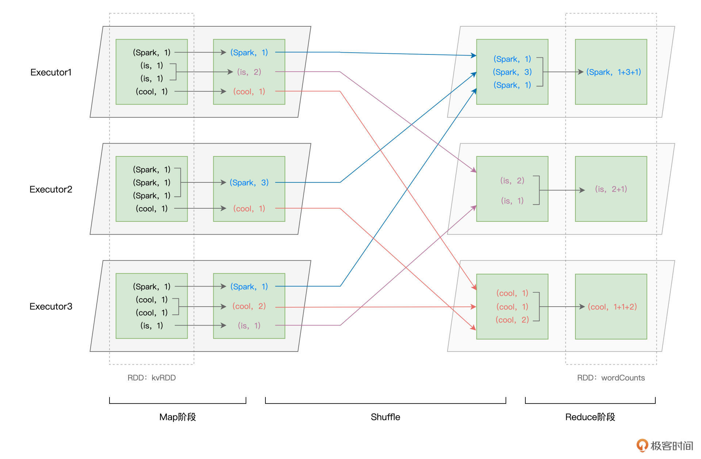
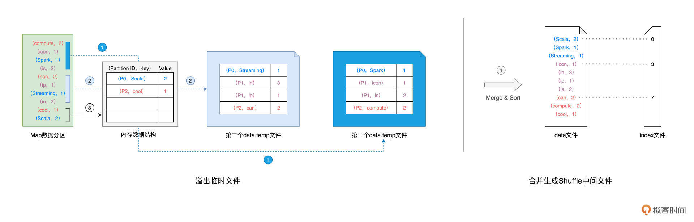
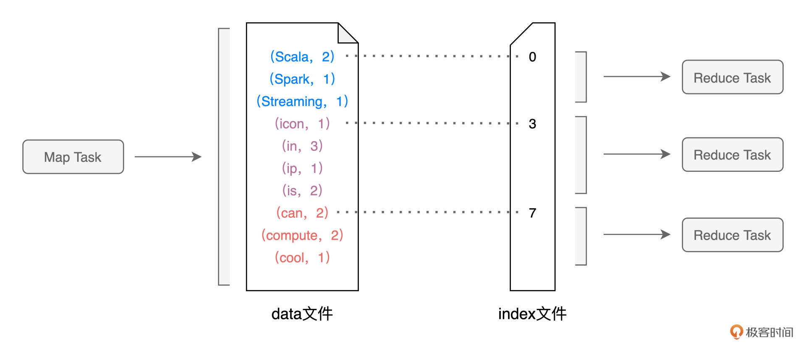

- 00 开篇词 入门Spark，你需要学会“三步走”.md.html
- 01 Spark：从“大数据的Hello World”开始.md.html
- 02 RDD与编程模型：延迟计算是怎么回事？.md.html
- 03 RDD常用算子（一）：RDD内部的数据转换.md.html
- 04 进程模型与分布式部署：分布式计算是怎么回事？.md.html
- 05 调度系统：如何把握分布式计算的精髓？.md.html
- 06 Shuffle管理：为什么Shuffle是性能瓶颈？.md.html
- 07 RDD常用算子（二）：Spark如何实现数据聚合？.md.html
- 08 内存管理：Spark如何使用内存？.md.html
- 09 RDD常用算子（三）：数据的准备、重分布与持久化.md.html
- 10 广播变量 & 累加器：共享变量是用来做什么的？.md.html
- 11 存储系统：数据到底都存哪儿了？.md.html
- 12 基础配置详解：哪些参数会影响应用程序稳定性？.md.html
- 13 Spark SQL：让我们从“小汽车摇号分析”开始.md.html
- 14 台前幕后：DataFrame与Spark SQL的由来.md.html
- 15 数据源与数据格式：DataFrame从何而来？.md.html
- 16 数据转换：如何在DataFrame之上做数据处理？.md.html
- 17 数据关联：不同的关联形式与实现机制该怎么选？.md.html
- 18 数据关联优化：都有哪些Join策略，开发者该如何取舍？.md.html
- 19 配置项详解：哪些参数会影响应用程序执行性能？.md.html
- 20 Hive + Spark强强联合：分布式数仓的不二之选.md.html
- 21 Spark UI（上）：如何高效地定位性能问题？.md.html
- 22 Spark UI（下）：如何高效地定位性能问题？.md.html
- 23 Spark MLlib：从“房价预测”开始.md.html
- 24 特征工程（上）：有哪些常用的特征处理函数？.md.html
- 25 特征工程（下）：有哪些常用的特征处理函数？.md.html
- 26 模型训练（上）：决策树系列算法详解.md.html
- 27 模型训练（中）：回归、分类和聚类算法详解.md.html
- 28 模型训练（下）：协同过滤与频繁项集算法详解.md.html
- 29 Spark MLlib Pipeline：高效开发机器学习应用.md.html
- 30 Structured Streaming：从“流动的Word Count”开始.md.html
- 31 新一代流处理框架：Batch mode和Continuous mode哪家强？.md.html
- 32 Window操作&Watermark：流处理引擎提供了哪些优秀机制？.md.html
- 33 流计算中的数据关联：流与流、流与批.md.html
- 34 Spark + Kafka：流计算中的“万金油”.md.html
- 用户故事 小王：保持空杯心态，不做井底之蛙.md.html
- 结束语 进入时间裂缝，持续学习.md.html
- 捐赠
06 Shuffle管理：为什么Shuffle是性能瓶颈？
你好，我是吴磊。
在上一讲，我们拜访了斯巴克国际建筑集团总公司，结识了Spark调度系统的三巨头：DAGScheduler、TaskScheduler和SchedulerBackend。相信你已经感受到，调度系统组件众多且运作流程精密而又复杂。
任务调度的首要环节，是DAGScheduler以Shuffle为边界，把计算图DAG切割为多个执行阶段Stages。显然，Shuffle是这个环节的关键。那么，我们不禁要问：“Shuffle是什么？为什么任务执行需要Shuffle操作？Shuffle是怎样一个过程？”
今天这一讲，我们转而去“拜访”斯巴克国际建筑集团的分公司，用“工地搬砖的任务”来理解Shuffle及其工作原理。由于Shuffle的计算几乎需要消耗所有类型的硬件资源，比如CPU、内存、磁盘与网络，在绝大多数的Spark作业中，Shuffle往往是作业执行性能的瓶颈，因此，我们必须要掌握Shuffle的工作原理，从而为Shuffle环节的优化打下坚实基础。
什么是Shuffle
我们先不急着给Shuffle下正式的定义，为了帮你迅速地理解Shuffle的含义，从而达到事半功倍的效果，我们不妨先去拜访斯巴克集团的分公司，去看看“工地搬砖”是怎么一回事。
斯巴克集团的各家分公司分别驻扎在不同的建筑工地，每家分公司的人员配置和基础设施都大同小异：在人员方面，各家分公司都有建筑工人若干、以及负责管理这些工人的工头。在基础设施方面，每家分公司都有临时搭建、方便存取建材的临时仓库，这些仓库配备各式各样的建筑原材料，比如混凝土砖头、普通砖头、草坪砖头等等。
咱们参观、考察斯巴克建筑集团的目的，毕竟还是学习Spark，因此我们得把分公司的人与物和Spark的相关概念对应上，这样才能方便你快速理解Spark的诸多组件与核心原理。
分公司的人与物和Spark的相关概念是这样对应的：

基于图中不同概念的对应关系，接下来，我们来看“工地搬砖”的任务。斯巴克建筑集团的3家分公司，分别接到3个不同的建筑任务。第一家分公司的建筑项目是摩天大厦，第二家分公司被要求在工地上建造一座“萌宠乐园”，而第三家分公司收到的任务是打造露天公园。为了叙述方便，我们把三家分公司分别称作分公司1、分公司2和分公司3。
显然，不同建筑项目对于建材的选型要求是有区别的，摩天大厦的建造需要刚性强度更高的混凝土砖头，同理，露天公园的建设需要透水性好的草坪砖头，而萌宠乐园使用普通砖头即可。
可是，不同类型的砖头，分别散落在3家公司的临时仓库中。为了实现资源的高效利用，每个分公司的施工工人们，都需要从另外两家把项目特需的砖头搬运过来。对于这个过程，我们把它叫作“搬砖任务”。

有了“工地搬砖”的直观对比，我们现在就可以直接给Shuffle下一个正式的定义了。
Shuffle的本意是扑克的“洗牌”，在分布式计算场景中，它被引申为集群范围内跨节点、跨进程的数据分发。在工地搬砖的任务中，如果我们把不同类型的砖头看作是分布式数据集，那么不同类型的砖头在各个分公司之间搬运的过程，与分布式计算中的Shuffle可以说是异曲同工。
要完成工地搬砖的任务，每位工人都需要长途跋涉到另外两家分公司，然后从人家的临时仓库把所需的砖头搬运回来。分公司之间相隔甚远，仅靠工人们一块砖一块砖地搬运，显然不现实。因此，为了提升搬砖效率，每位工人还需要借助货运卡车来帮忙。不难发现，工地搬砖的任务需要消耗大量的人力物力，可以说是劳师动众。
Shuffle的过程也是类似，分布式数据集在集群内的分发，会引入大量的磁盘I/O与网络I/O。在DAG的计算链条中，Shuffle环节的执行性能是最差的。你可能会问：“既然Shuffle的性能这么差，为什么在计算的过程中非要引入Shuffle操作呢？免去Shuffle环节不行吗？”
其实，计算过程之所以需要Shuffle，往往是由计算逻辑、或者说业务逻辑决定的。
比如，对于搬砖任务来说，不同的建筑项目就是需要不同的建材，只有这样才能满足不同的施工要求。再比如，在Word Count的例子中，我们的“业务逻辑”是对单词做统计计数，那么对单词“Spark”来说，在做“加和”之前，我们就是得把原本分散在不同Executors中的“Spark”，拉取到某一个Executor，才能完成统计计数的操作。
结合过往的工作经验，我们发现在绝大多数的业务场景中，Shuffle操作都是必需的、无法避免的。既然我们躲不掉Shuffle，那么接下来，我们就一起去探索，看看Shuffle到底是怎样的一个计算过程。
Shuffle工作原理
为了方便你理解，我们还是用Word Count的例子来做说明。在这个示例中，引入Shuffle操作的是reduceByKey算子，也就是下面这行代码（完整代码请回顾[第1讲]）。
// 按照单词做分组计数
val wordCounts: RDD[(String, Int)] = kvRDD.reduceByKey((x, y) => x + y)
我们先来直观地回顾一下这一步的计算过程，然后再去分析其中涉及的Shuffle操作：

如上图所示，以Shuffle为边界，reduceByKey的计算被切割为两个执行阶段。约定俗成地，我们把Shuffle之前的Stage叫作Map阶段，而把Shuffle之后的Stage称作Reduce阶段。在Map阶段，每个Executors先把自己负责的数据分区做初步聚合（又叫Map端聚合、局部聚合）；在Shuffle环节，不同的单词被分发到不同节点的Executors中；最后的Reduce阶段，Executors以单词为Key做第二次聚合（又叫全局聚合），从而完成统计计数的任务。
不难发现，Map阶段与Reduce阶段的计算过程相对清晰明了，二者都是利用reduce运算完成局部聚合与全局聚合。在reduceByKey的计算过程中，Shuffle才是关键。
仔细观察上图你就会发现，与其说Shuffle是跨节点、跨进程的数据分发，不如说Shuffle是Map阶段与Reduce阶段之间的数据交换。那么问题来了，两个执行阶段之间，是如何实现数据交换的呢？
Shuffle中间文件
如果用一句来概括的话，那就是，Map阶段与Reduce阶段，通过生产与消费Shuffle中间文件的方式，来完成集群范围内的数据交换。换句话说，Map阶段生产Shuffle中间文件，Reduce阶段消费Shuffle中间文件，二者以中间文件为媒介，完成数据交换。
那么接下来的问题是，什么是Shuffle中间文件，它是怎么产生的，又是如何被消费的？
我把它的产生和消费过程总结在下图中了：

在上一讲介绍调度系统的时候，我们说过DAGScheduler会为每一个Stage创建任务集合TaskSet，而每一个TaskSet都包含多个分布式任务（Task）。在Map执行阶段，每个Task（以下简称Map Task）都会生成包含data文件与index文件的Shuffle中间文件，如上图所示。也就是说，Shuffle文件的生成，是以Map Task为粒度的，Map阶段有多少个Map Task，就会生成多少份Shuffle中间文件。
再者，Shuffle中间文件是统称、泛指，它包含两类实体文件，一个是记录（Key，Value）键值对的data文件，另一个是记录键值对所属Reduce Task的index文件。换句话说，index文件标记了data文件中的哪些记录，应该由下游Reduce阶段中的哪些Task（简称Reduce Task）消费。在上图中，为了方便示意，我们把首字母是S、i、c的单词分别交给下游的3个Reduce Task去消费，显然，这里的数据交换规则是单词首字母。
在Spark中，Shuffle环节实际的数据交换规则要比这复杂得多。数据交换规则又叫分区规则，因为它定义了分布式数据集在Reduce阶段如何划分数据分区。假设Reduce阶段有N个Task，这N个Task对应着N个数据分区，那么在Map阶段，每条记录应该分发到哪个Reduce Task，是由下面的公式来决定的。
P = Hash(Record Key) % N
对于任意一条数据记录，Spark先按照既定的哈希算法，计算记录主键的哈希值，然后把哈希值对N取模，计算得到的结果数字，就是这条记录在Reduce阶段的数据分区编号P。换句话说，这条记录在Shuffle的过程中，应该被分发到Reduce阶段的P号分区。
熟悉了分区规则与中间文件之后，接下来，我们再来说一说中间文件是怎么产生的。
Shuffle Write
我们刚刚说过，Shuffle中间文件，是以Map Task为粒度生成的，我们不妨使用下图中的Map Task以及与之对应的数据分区为例，来讲解中间文件的生成过程。数据分区的数据内容如图中绿色方框所示：

在生成中间文件的过程中，Spark会借助一种类似于Map的数据结构，来计算、缓存并排序数据分区中的数据记录。这种Map结构的Key是（Reduce Task Partition ID，Record Key），而Value是原数据记录中的数据值，如图中的“内存数据结构”所示。
对于数据分区中的数据记录，Spark会根据我们前面提到的公式1逐条计算记录所属的目标分区ID，然后把主键（Reduce Task Partition ID，Record Key）和记录的数据值插入到Map数据结构中。当Map结构被灌满之后，Spark根据主键对Map中的数据记录做排序，然后把所有内容溢出到磁盘中的临时文件，如图中的步骤1所示。
随着Map结构被清空，Spark可以继续读取分区内容并继续向Map结构中插入数据，直到Map结构再次被灌满而再次溢出，如图中的步骤2所示。就这样，如此往复，直到数据分区中所有的数据记录都被处理完毕。
到此为止，磁盘上存有若干个溢出的临时文件，而内存的Map结构中留有部分数据，Spark使用归并排序算法对所有临时文件和Map结构剩余数据做合并，分别生成data文件、和与之对应的index文件，如图中步骤4所示。Shuffle阶段生成中间文件的过程，又叫Shuffle Write。
总结下来，Shuffle中间文件的生成过程，分为如下几个步骤：
- 对于数据分区中的数据记录，逐一计算其目标分区，然后填充内存数据结构；-
- 当数据结构填满后，如果分区中还有未处理的数据记录，就对结构中的数据记录按（目标分区 ID，Key）排序，将所有数据溢出到临时文件，同时清空数据结构；-
- 重复前 2 个步骤，直到分区中所有的数据记录都被处理为止；-
- 对所有临时文件和内存数据结构中剩余的数据记录做归并排序，生成数据文件和索引文件。
到目前为止，我们熟悉了Spark在Map阶段生产Shuffle中间文件的过程，那么，在Reduce阶段，不同的Tasks又是如何基于这些中间文件，来定位属于自己的那部分数据，从而完成数据拉取呢？
Shuffle Read
首先，我们需要注意的是，对于每一个Map Task生成的中间文件，其中的目标分区数量是由Reduce阶段的任务数量（又叫并行度）决定的。在下面的示意图中，Reduce阶段的并行度是3，因此，Map Task的中间文件会包含3个目标分区的数据，而index文件，恰恰是用来标记目标分区所属数据记录的起始索引。

对于所有Map Task生成的中间文件，Reduce Task需要通过网络从不同节点的硬盘中下载并拉取属于自己的数据内容。不同的Reduce Task正是根据index文件中的起始索引来确定哪些数据内容是“属于自己的”。Reduce阶段不同于Reduce Task拉取数据的过程，往往也被叫做Shuffle Read。
好啦，到此为止，我们依次解答了本讲最初提到的几个问题：“什么是Shuffle？为什么需要Shuffle，以及Shuffle是如何工作的”。Shuffle是衔接不同执行阶段的关键环节，Shuffle的执行性能往往是Spark作业端到端执行效率的关键，因此，掌握Shuffle，是我们入门Spark的必经之路。希望今天的讲解，能帮你更好地认识Shuffle。
重点回顾
今天的内容比较多，我们一起来做个总结。
首先，我们给Shuffle下了一个明确的定义，在分布式计算场景中，Shuffle指的是集群范围内跨节点、跨进程的数据分发。
我们在最开始提到，Shuffle的计算会消耗所有类型的硬件资源。具体来说，Shuffle中的哈希与排序操作会大量消耗CPU，而Shuffle Write生成中间文件的过程，会消耗宝贵的内存资源与磁盘I/O，最后，Shuffle Read阶段的数据拉取会引入大量的网络I/O。不难发现，Shuffle是资源密集型计算，因此理解Shuffle对开发者来说至关重要。
紧接着，我们介绍了Shuffle中间文件。Shuffle中间文件是统称，它包含两类文件，一个是记录（Key，Value）键值对的data文件，另一个是记录键值对所属Reduce Task的index文件。计算图DAG中的Map阶段与Reduce阶段，正是通过中间文件来完成数据的交换。
接下来，我们详细讲解了Shuffle Write过程中生成中间文件的详细过程，归纳起来，这个过程分为4个步骤：
- 对于数据分区中的数据记录，逐一计算其目标分区，然后填充内存数据结构；-
- 当数据结构填满后，如果分区中还有未处理的数据记录，就对结构中的数据记录按（目标分区 ID，Key）排序，将所有数据溢出到临时文件，同时清空数据结构；-
- 重复前 2 个步骤，直到分区中所有的数据记录都被处理为止；-
- 对所有临时文件和内存数据结构中剩余的数据记录做归并排序，生成数据文件和索引文件。
最后，在Reduce阶段，Reduce Task通过index文件来“定位”属于自己的数据内容，并通过网络从不同节点的data文件中下载属于自己的数据记录。
每课一练
这一讲就到这里了，我在这给你留个思考题：
在Shuffle的计算过程中，中间文件存储在参数spark.local.dir设置的文件目录中，这个参数的默认值是/tmp，你觉得这个参数该如何设置才更合理呢？
欢迎你在评论区分享你的答案，我在评论区等你。如果这一讲对你有所帮助，你也可以分享给自己的朋友，我们下一讲见。
© 2019 - 2023 Liangliang Lee. Powered by gin and hexo-theme-book.